Scalable Forum Application
Step-by-step guide to deploying a scalable web app using ALB, Auto Scaling, and RDS with Terraform.
High-Level Architecture
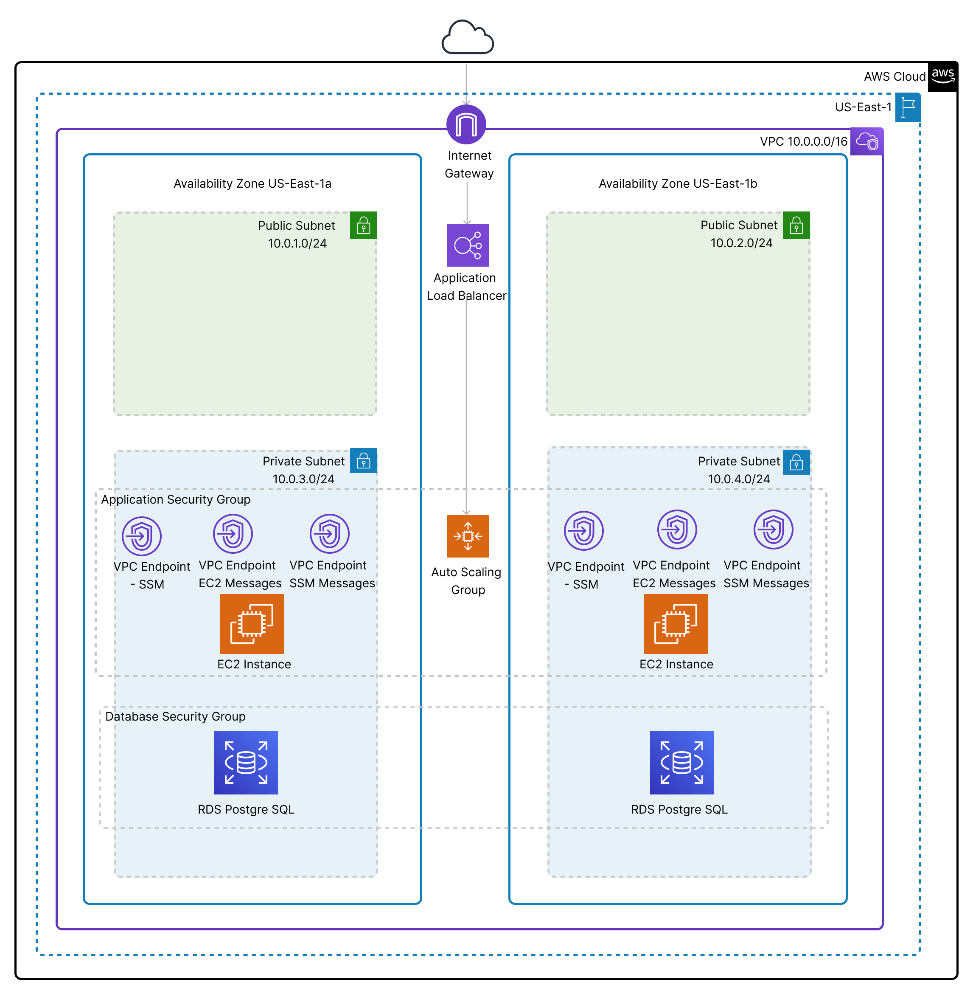This architecture follows a 3-tier model designed for high availability, scalability, and security. It consists of:
- Presentation Layer: The Application Load Balancer (ALB) routes external traffic to EC2 instances.
- Application Layer: EC2 instances are deployed in private subnets and managed by an Auto Scaling Group.
- Database Layer: Amazon RDS PostgreSQL is placed in private subnets for secure database access.
To ensure secure and efficient operations, AWS VPC Endpoints for SSM, EC2 Messages, and SSM Messages are used, allowing EC2 instances to connect to AWS Systems Manager without an Internet Gateway or NAT Gateway.
Well-Architected Framework Alignment
- Security- Private subnets for EC2 and RDS, security groups, and VPC endpoints prevent unnecessary internet exposure.
- Reliability- Multi-AZ deployment and Auto Scaling ensure high availability and fault tolerance.
- Performance Efficiency- Load balancing distributes traffic efficiently, and VPC Endpoints reduce latency for AWS service connections.
- Cost Optimization- Eliminates the need for a NAT Gateway, reducing costs while maintaining secure SSM connectivity.
- Operational Excellence- AWS Systems Manager (via VPC Endpoints) enables easy remote management without requiring public access.
This setup ensures a highly available, secure, and cost-effective deployment for the Scalable Forum Application.
Step-by-Step Guide
1. Set Up the Terraform Project
- Initialize a GitHub repository and push Terraform configuration files.
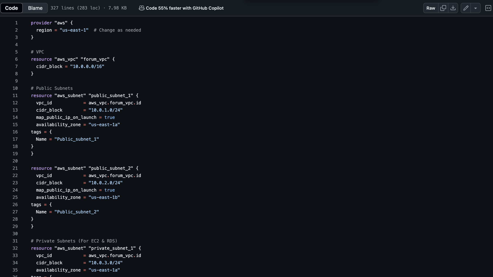- Login to Terraform Cloud or install Terraform CLI and configure AWS credentials.
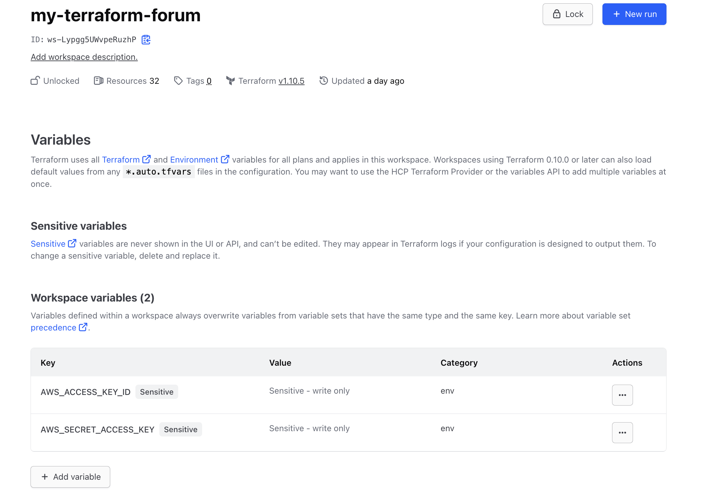
2. Create a VPC and Subnets
- Define a custom VPC using Terraform.
- Create public and private subnets across multiple availability zones.
3. Deploy an Application Load Balancer (ALB)
- Configure an ALB to distribute traffic across multiple EC2 instances.
- Set up target groups and security groups.
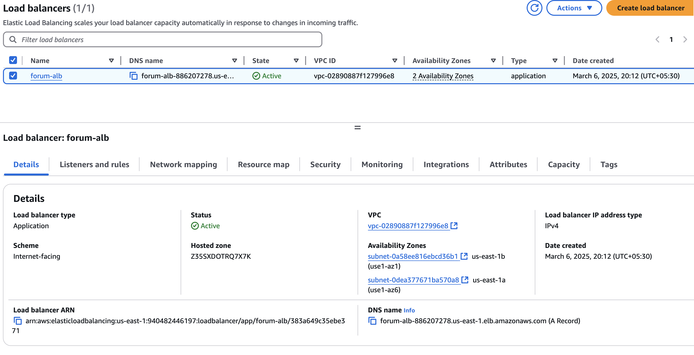
4. Implement Auto Scaling
- Define an Auto Scaling group with launch templates.
- Configure scaling policies based on CPU usage.
Why I Created Three VPC Endpoints
Since our EC2 instances are placed inside private subnets, they cannot directly access the internet. Instead of using a NAT Gateway, we created three VPC endpoints to allow secure communication with AWS Systems Manager:
- SSM Endpoint: Enables communication with AWS Systems Manager for running commands, patching, and automation.
- EC2Messages Endpoint: Facilitates messaging between EC2 instances and AWS Systems Manager for Session Manager and Run Command.
- SSMMessages Endpoint: Ensures the SSM Agent can send and receive messages securely through Systems Manager.
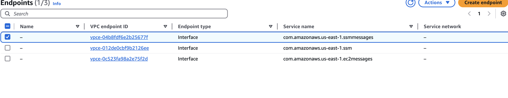
Using VPC endpoints instead of a NAT Gateway reduces costs and improves security by keeping traffic within AWS.
5. Deploy RDS Database
- Create an Amazon RDS instance in private subnets.
- Configure security groups to allow access from the application servers.
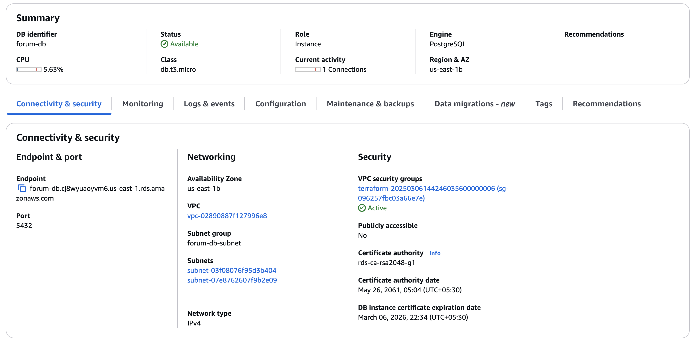
6. Set Up Terraform
- Use GitHub to trigger Terraform apply on push.
- Implement Terraform Cloud or AWS CodePipeline for automated deployments.
- Terraform Plan
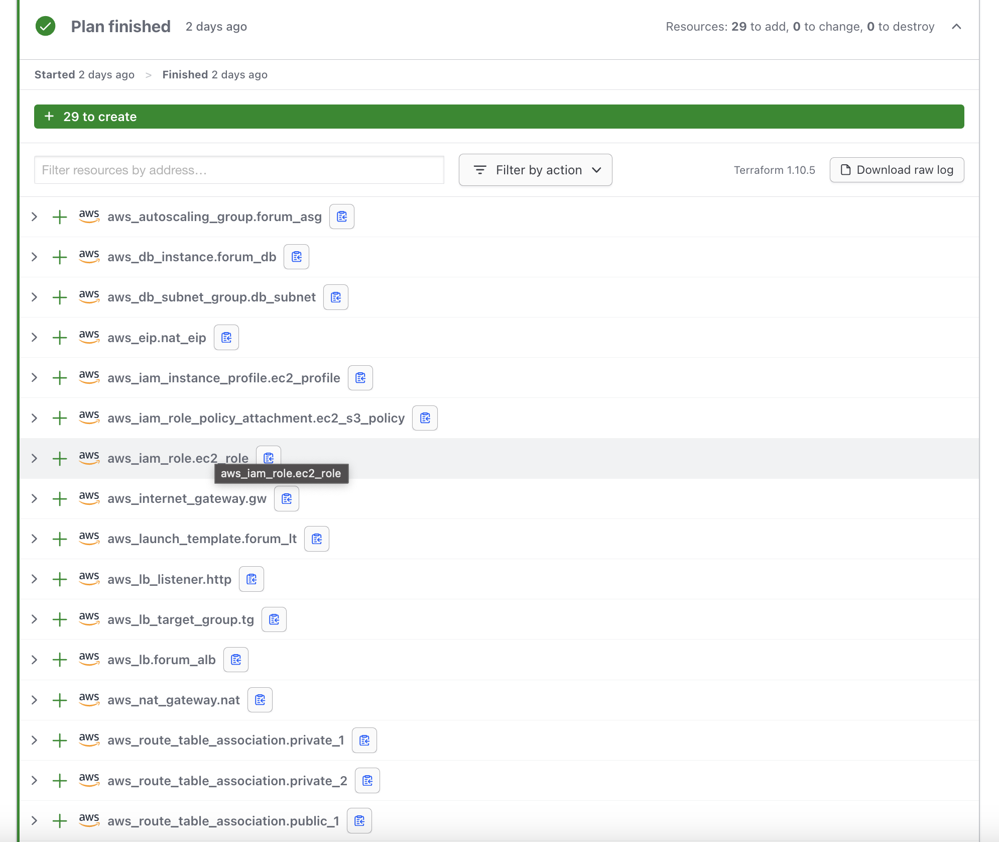
- Terraform Apply
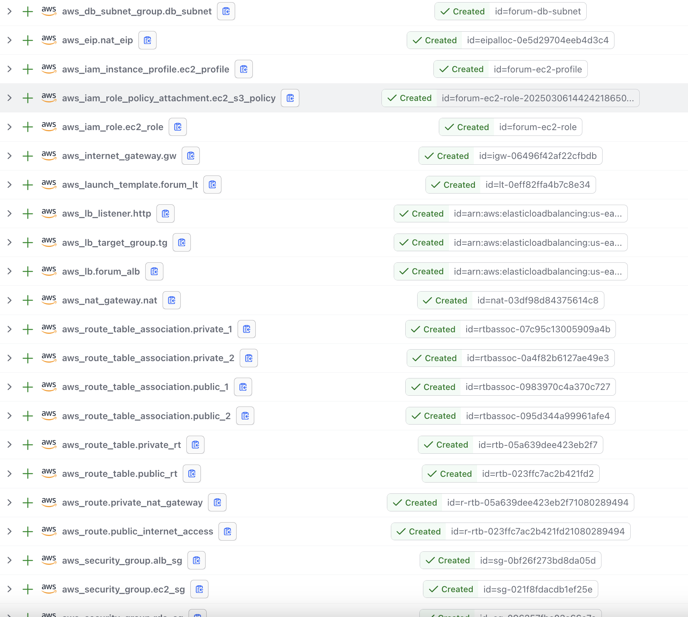
- Connected made using AWS Systems Manager:
Installed PostgreSQL
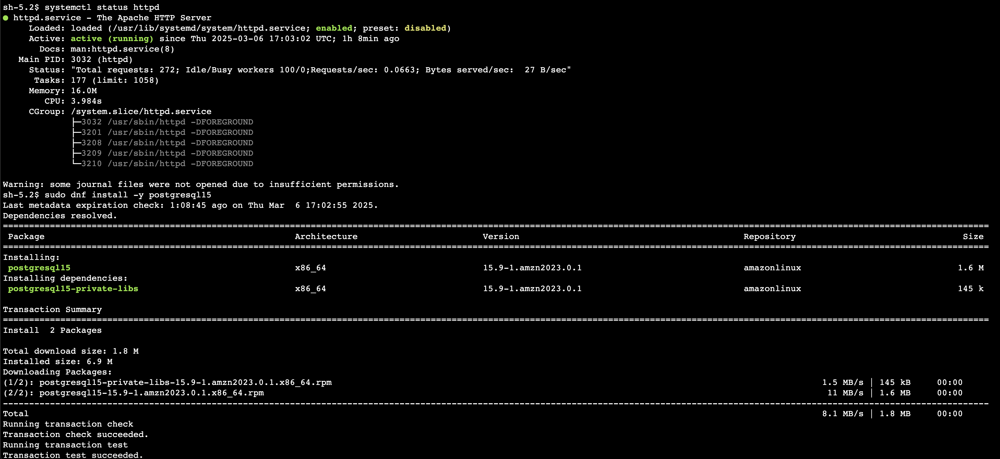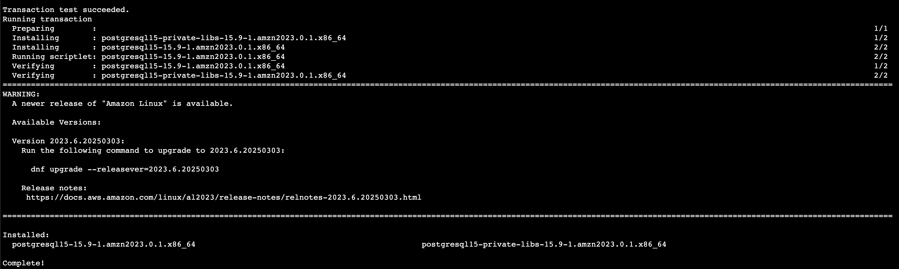
Created Database, table and inserted values
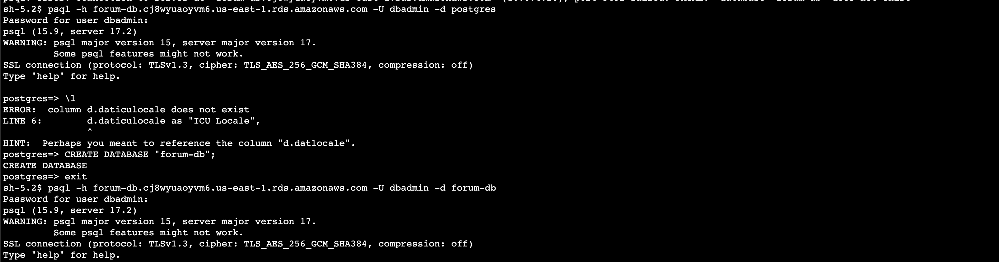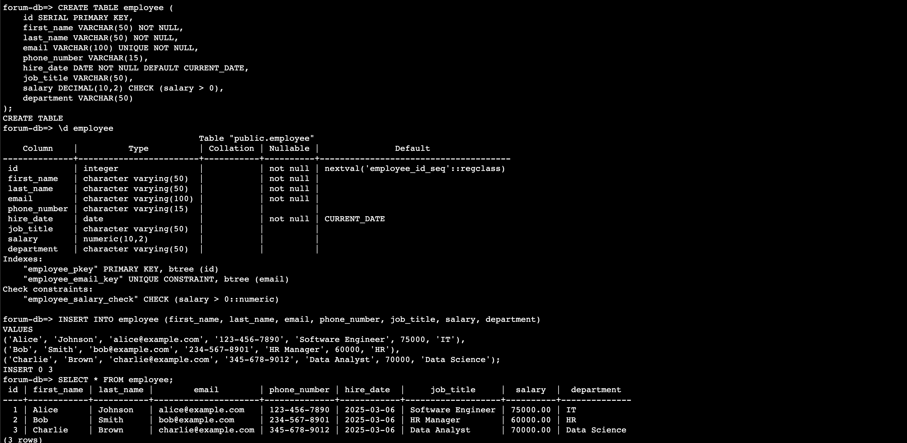